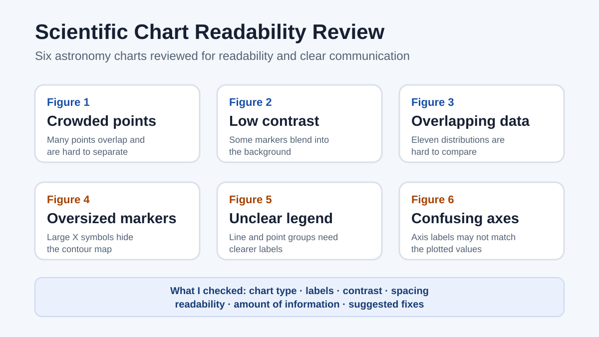

Chart review · readability · scientific communication
Scientific Chart Readability Review
I reviewed six astronomy charts, explained what made each one easy or difficult to read, and suggested specific improvements.
6figures reviewed
7checks per figure
11datasets in the most crowded figure
1possible axis-label problem

Review method
For each chart, I identified what kind of chart it was, counted the data series, checked the axes and legend, and looked for problems with color, spacing, labels, and crowded information. I then wrote a specific change that could make the chart easier to understand.
What I found
- Some charts placed so many points on top of each other that individual patterns were difficult to see.
- Some marker colors blended into the image behind them.
- Large symbols covered contour lines and other important information.
- One legend did not clearly explain the plotted groups or trend line.
- One figure appeared to have confusing axis labels that needed verification.
Why it matters for quality work
A chart can contain correct data and still be difficult to use. This project shows how I check whether labels, contrast, spacing, and visual choices help a reader understand the result rather than hide it.